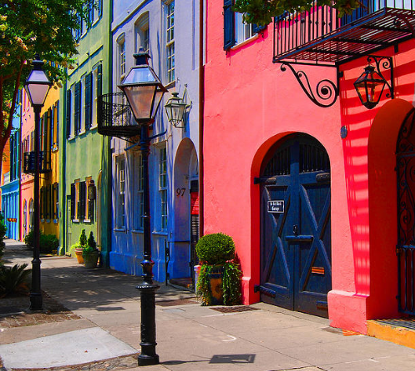

Last Fling Before the Ring Decor, Matching Shirts, Outfits & Party Shops in the Holy City

Fling before the ring Charleston SC weekends are all about the details: the balloon garland waiting in the rental, the matching tees in the group photo, the cookies with the bride's initials. This guide skips the usual "where to eat and where to stay" lists and focuses on the fun part of a last fling before the ring — the decor, the merch, the outfits, and the local Charleston shops that make your theme come together.
Whether you call it a final fling before the ring, a Lowcountry bach party, or just "the girls' weekend," every vendor below is local to Charleston or ships fast enough to land before you do.
Pick a theme first — it decides your balloon colors, shirt designs, cookie icing, and outfit dress code all at once.
Soft pastel pinks, floral prints, gingham, and sweet tea vibes. Perfect for brunch setups and courtyard photos.
Coastal stripes, retro sunglasses, and sunset cocktails. Ideal for Isle of Palms or Folly Beach rentals.
Cowboy boots with party dresses or denim. A Southern rustic twist that still looks polished in photos.
Little black dresses, pearls, and sleek evening style suited for an upscale King Street night.
Iridescent fringe, mirror balls, and metallics. The most photo-friendly fling before the ring theme there is.
Navy stripes and harbor style — a natural fit for a Charleston boat day or a waterfront rental.
These teams decorate your rental before you arrive — balloons, signage, welcome bags, and themed tablescapes — so the party starts when you walk in.
Charleston-based setup crew that decorates rentals with balloon arches, BRIDE balloons over the bed, printed itineraries, cups, koozies, and welcome bags to match your theme. They also stock the fridge before you land. Serves downtown, Folly Beach, and Mount Pleasant.
View Bach Your ServiceLuxury bachelorette decor installs with custom backdrops, balloon garlands, welcome signage, and branded apparel. Good fit if you want a fully styled, Instagram-ready fling before the ring setup with zero DIY.
View Got Your BashThe go-to online shop for bachelorette decor kits, fringe banners, sashes, XL bride straws, and themed confetti. Great for disco, cowgirl, and "last fling" themes if you're decorating yourself.
Shop xo, FettiA Charleston party shop and craft studio where your group bedazzles champagne bottles, clutches, and more. All rhinestones and supplies included, and you leave with a keepsake that doubles as party decor.
Book the Bedazzle PartyBalloon garlands are the centerpiece of almost every fling before the ring setup. Book early for spring and fall weekends.
Family-owned balloon boutique offering arches, columns, centerpieces, and delivery. They also have a retail shop where you can grab balloons, get them inflated, and go.
Visit WebsiteLocally owned garland and decor company with a North Charleston studio. Balloon walls, walk-through arches, backdrops, and theme accessories delivered and installed across the Lowcountry.
See Their WorkSpecialty balloon boutique serving the Charleston Tri-County area with helium bouquets, grab-and-go balloon decor, and full-service installations.
View Arise Balloon BarThemed desserts double as decor. Order custom cookies with the bride's initials, a ring-shaped cake, or cupcakes iced in your palette.
A beloved Cannon Street bakery known for small-batch cupcakes, cookies, and custom cakes since 2007. Their signature boxes look great on a welcome table.
Order from SugarSmall-batch studio making custom cakes and desserts for celebrations. Ideal for a statement fling before the ring cake that matches your theme.
Visit WebsiteCharleston cupcake shop taking advance custom orders — easy to color-match to your balloons and table decor.
Order OnlineLocal baker offering pre-order cupcakes. A simple way to add a themed dessert tower without a full custom cake.
Pre-OrderFresh flowers, a glam squad, and a photo booth turn a decorated rental into a full last-fling experience.
Charleston floral designer behind centerpieces, bouquets, and installations. Ask about bud vase arrangements or a floral bar for the garden-chic theme.
Visit WebsiteBachelorette hair and makeup in a studio on Market Street or on-location at your rental. Group bookings welcome before the big night out.
Book GlamOpen-air and enclosed photo booths with props, instant prints, and digital copies. Custom print templates can carry your "fling before the ring" branding.
Get Booth PricingMatching tees make your group easy to spot on King Street and in every photo. Order 2–3 weeks out to be safe.
Charleston custom merch shop with screen printing, embroidery, and heat transfer. Low minimums and fast turnaround — good for custom "Last Fling" tees, hats, and koozies printed locally.
Get a QuoteLongtime West Ashley printer for custom tees, embroidery, cups, and promotional items. Great for larger groups that want shirts plus matching cups or tote bags.
Visit WebsitePersonalized bachelorette shirts, tanks, jerseys, hats, and sashes, with a different name or nickname on each person's design.
Shop Bridal Party TeesDesign your own fling before the ring tees with no order minimums and guaranteed delivery dates — handy when your group size keeps changing.
Start DesigningThe widest selection of ready-made fling before the ring shirts, sweatshirts, sashes, cups, temporary tattoos, banners, and printable invitations from independent sellers.
Browse on EtsyShop local for the bride's white dress and the crew's coordinating looks — many of these shops are walkable on King Street.
Nearly 10,000 square feet of designer ready-to-wear, shoes, and handbags at 314 King Street. The spot for a standout white dress for the bride's big night.
Shop HampdenOccasion-ready dresses with classic tailoring and custom prints at 127 King Street. Perfect for the Historic Holy City Nights dinner look.
Shop Abbey GlassA Charleston brand known for bright statement jewelry, tassel earrings, clutches, and party goods. Great for matching earrings across the whole group.
Shop The Tiny TasselBright, breezy dresses and separates that go from brunch to the beach, at prices that work for a whole bridesmaid group.
Shop Mulberry & KingDecorating yourself? Pack these — Charleston humidity is tough on balloons and adhesive, so a few extras go a long way.
Humidity tip: Charleston summers wilt latex balloons fast. Keep garlands indoors with the AC on, inflate the day of, and ask your balloon vendor about treated balloons for outdoor setups on porches or docks. Most rentals don't allow tape on painted walls, so plan for hooks or freestanding backdrop frames.
Michael At Your Place brings the show directly to your rental — Isle of Palms, Folly Beach, downtown Charleston, and beyond.
Book Now at MichaelAtYourPlace.com